Capacidad disponibleAdministración y gestión de usuariosAcceso, cuentas, roles, perfiles y menús
Disponible
Identidad y seguridad funcional del Portal
Esta capacidad concentra el acceso seguro de los usuarios y la administración
de quién puede operar cada área del Portal. Combina la experiencia de ingreso,
el ciclo de vida de las cuentas y la configuración dinámica de menús según
roles y perfiles — sin depender de redespliegues para ajustar la navegación.
Es una pieza transversal: sostiene clientes, fuerza de ventas, prestadores
y personal interno sobre el mismo modelo de identidad.
Está lista para integrarse al Portal unificado en la Fase 1: no es un mockup
ni un plan a futuro, sino una capacidad operativa construida sobre el runtime
de Formas Configurables y prácticas de seguridad empresarial.
Un solo ingreso
Autenticación unificada con sesión controlada y menú según el rol operativo.
Gobierno de cuentas
Alta, credenciales, roles, perfiles y estatus desde una consola central.
Navegación por configuración
Menús multinivel asociados a perfiles, con visibilidad fina y sin redeploy.
Acceso e identidad
Login, selección de rol, sesión controlada y autogestión del usuario
Administración de cuentas
Alta, credenciales, roles, perfiles, estatus y eliminación
Menús dinámicos
Estructura, asociación a perfiles y visibilidad por opción
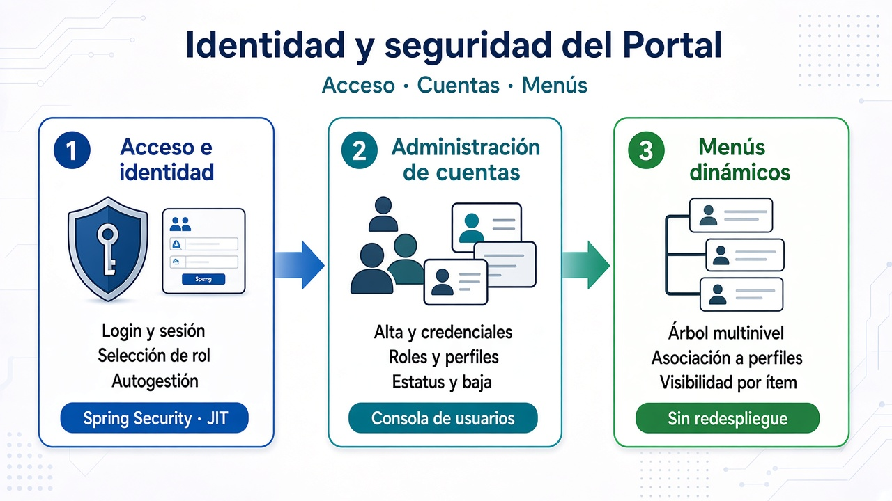
Tres pilares de la capacidad: acceso, cuentas y menús
1 Acceso e identidad
Un solo punto de entrada para clientes, fuerza de ventas, prestadores
y personal interno. Tras autenticarse, el usuario selecciona el rol
operativo (si tiene varios) y recibe el menú correspondiente.
La sesión se sostiene de forma controlada entre las aplicaciones del
Portal, con extensión y cierre automático según la política de seguridad.
Inicio de sesiónCredenciales de acceso y entrada al Portal.
Selección de rolCuando el usuario opera con más de un rol, elige el contexto de trabajo.
Menú personalizadoOpciones visibles según el rol de la sesión.
Control de sesiónAviso de vencimiento, extensión de sesión y cierre automático al expirar.
Registro de usuarioAlta con datos de identificación y confirmación.
Recuperación de accesoOlvido de contraseña con verificación por preguntas de seguridad.
Características de seguridad del acceso
La autenticación y el control de sesión están diseñados para un entorno
multiaplicación: un ingreso válido sostiene la seguridad entre los
módulos del Portal y protege la vigencia de la sesión.
Autenticación con Spring Security + JWT
Las credenciales se validan en el backend con Spring Security y se genera un Token JWT
que sostiene la sesión de forma controlada. El enfoque aplica buenas prácticas de seguridad
empresarial para reducir la exposición a ataques frecuentes: fuerza bruta y reutilización
de credenciales, secuestro o fijación de sesión, acceso no autorizado entre módulos,
reutilización de sesiones vencidas y falsificación de peticiones entre sitios (CSRF),
además de reforzar la integridad del acceso frente a intentos de elevación de privilegios.
Propagación del token entre aplicacionesTras el ingreso, las aplicaciones invocadas mantienen la seguridad mediante la propagación del JWT.
Vigencia de sesión parametrizableLa duración de la sesión queda definida en el token, según política de Spring Security.
Extensión automática de sesiónAntes del vencimiento (aviso ~45 s), el usuario puede extender la sesión y renovar el token.
Logout automático al expirarSi la sesión vence, se cierra el acceso y se solicita un nuevo ingreso.
Contexto de seguridad por rol
El rol elegido (o el único rol del usuario) define el menú visible y, además,
los privilegios disponibles dentro del marco de ejecución de las aplicaciones
invocadas tras el ingreso.
Recuperación con preguntas de seguridadOlvido o bloqueo de contraseña: identificación del usuario, verificación y despacho de correo de recuperación.
Desbloqueo de cuentaFlujo para restablecer el acceso cuando la cuenta ha quedado bloqueada.
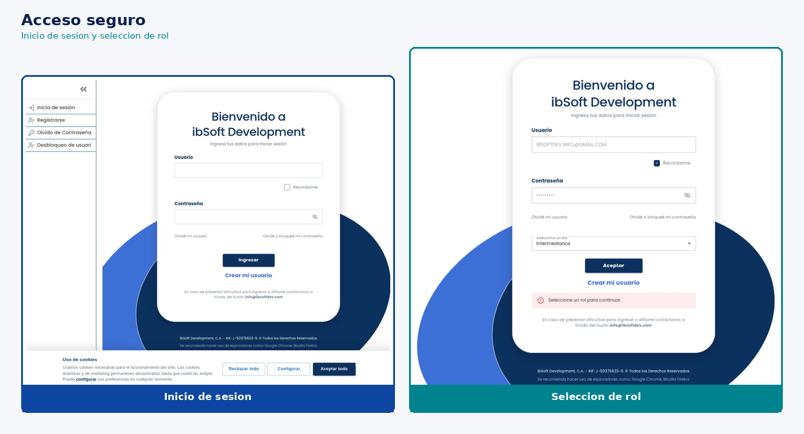
Inicio de sesión y selección de rol cuando el usuario tiene varios perfiles operativos
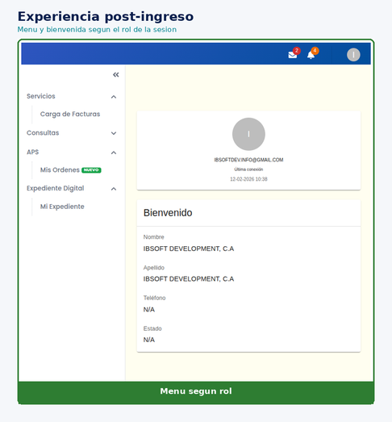
Experiencia post-ingreso: menú y bienvenida según el rol de la sesión
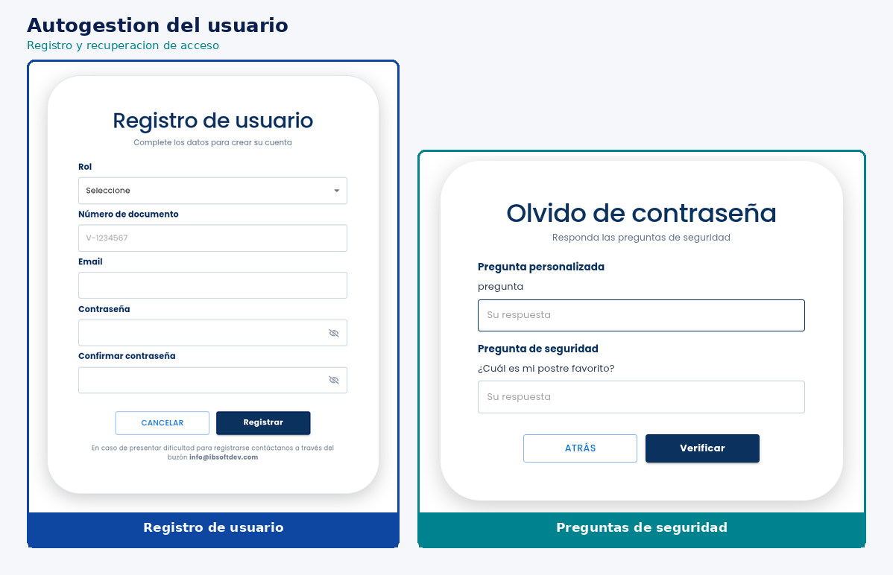
Autogestión: registro y recuperación de acceso
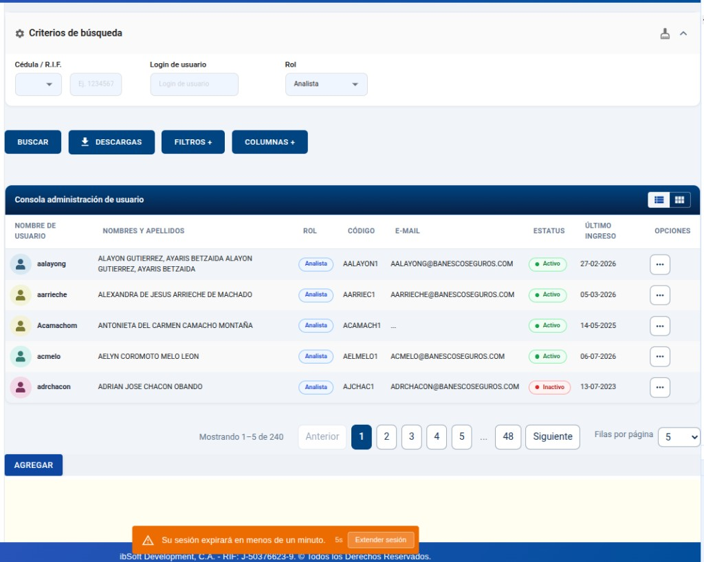
Aviso para extender la sesión antes del vencimiento
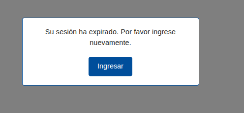
Cierre controlado cuando la sesión ha expirado
2 Administración de usuarios
Consola para gestionar el ciclo de vida de las cuentas: consulta,
alta, credenciales, asignación de roles y perfiles, suspensión/activación
y eliminación con confirmación. El administrador opera desde una vista
maestro sin depender de intervenciones técnicas para cada cambio de acceso.
Consola maestroBúsqueda, listado y menú de acciones por usuario.
Alta de usuariosCreación de cuentas con activación por correo.
Gestión de claveReglas de complejidad, cambio forzado y clave por defecto.
RolesAsociar o quitar roles que definen el contexto operativo.
Perfiles (grupos)Asignación de perfiles por rol, con vista previa de menús.
Estatus y bajaActivar, suspender o eliminar cuentas con confirmación.
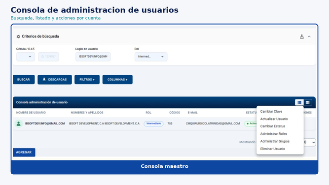
Consola maestro: búsqueda, listado y acciones por usuario
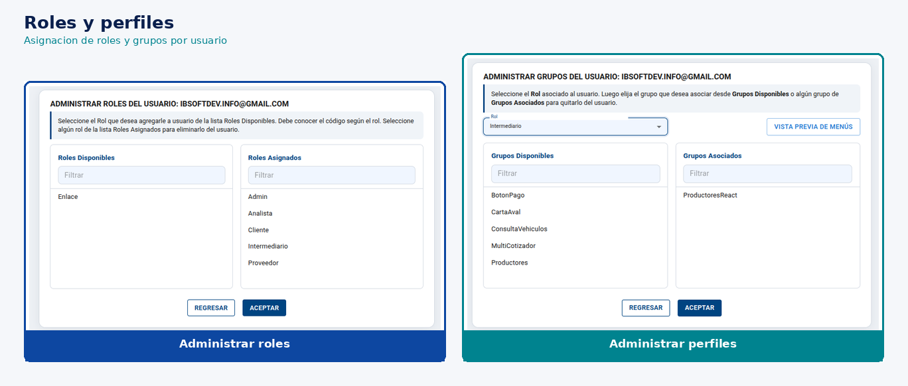
Asignación de roles y perfiles (grupos) al usuario
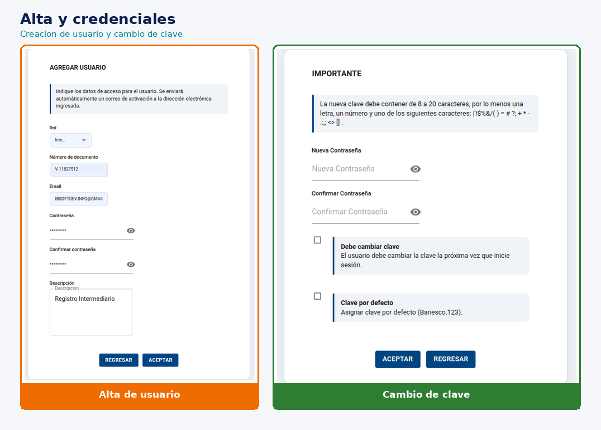
Alta de cuentas y gestión de credenciales
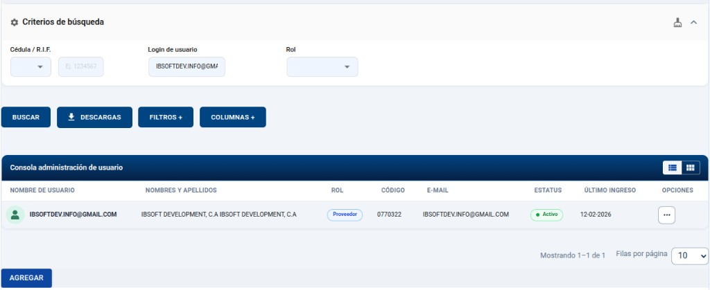
Estatus Activo visible en la consola
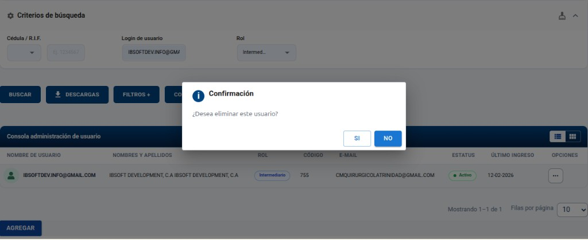
Eliminación de usuario con confirmación explícita
3 Administración de menús
Define qué opciones ve cada perfil. La estructura de menús se configura
de forma dinámica y se asocia a roles y perfiles, permitiendo evolucionar
la navegación del Portal sin redesplegar la aplicación: nuevos dominios
o cambios de privilegio se reflejan por configuración.
Consola dualPanel de menús y panel de roles/perfiles en una misma vista.
Árbol multinivelCrear, editar, clonar y organizar opciones por niveles.
Perfiles bajo rolesDefinición de grupos/perfiles asociados a cada rol.
Asociación menú ↔ perfilAsignación de menús a perfiles (p. ej. por arrastre).
Visibilidad por ítemMostrar u ocultar opciones individuales sin borrar el menú maestro.
Suspender / ActivarControl temporal de menús completos por perfil.
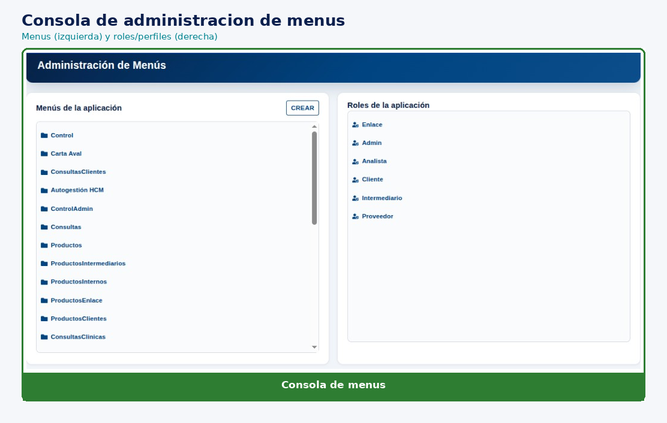
Consola dual: menús y roles/perfiles
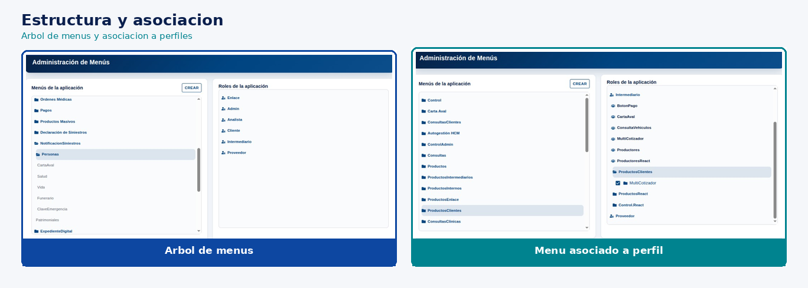
Estructura del menú y asociación a perfiles
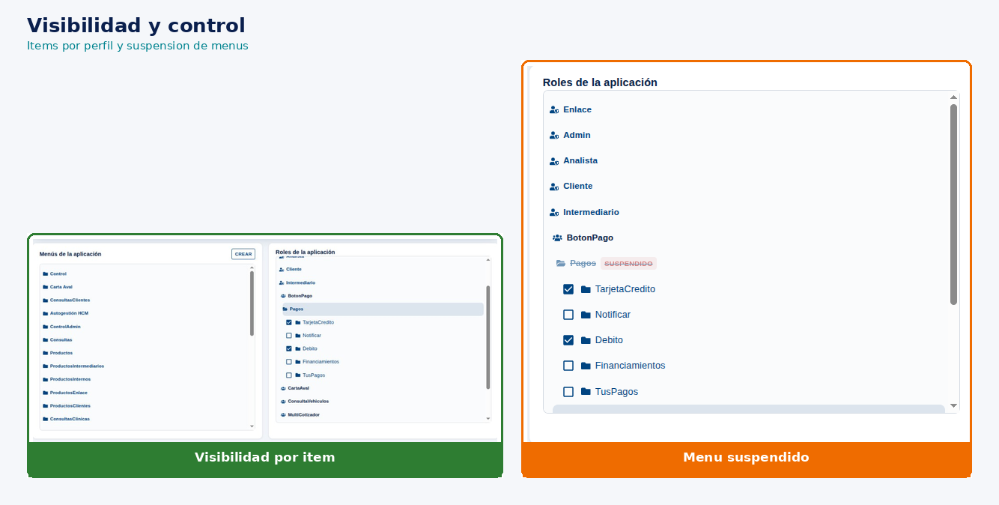
Control fino de visibilidad y suspensión de menús
4 Cómo se articulan las tres piezas
La administración de usuarios define quién entra y con qué rol/perfil;
la administración de menús define qué opciones ve cada perfil;
el acceso e identidad aplica esa configuración en la experiencia diaria.
El resultado es una cadena de autorización clara y auditable:
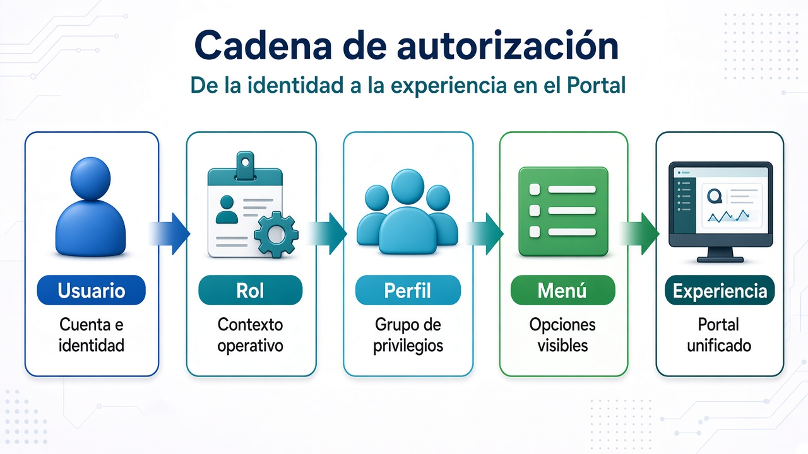
Cadena de autorización: de la identidad a la experiencia en el Portal
Usuario: cuenta e identidad con las que se ingresa al Portal.
Perfil: agrupación de privilegios asociada al rol.
Menú: opciones visibles y navegables para ese perfil.
Experiencia: lo que el usuario ve y puede hacer en el Portal unificado.
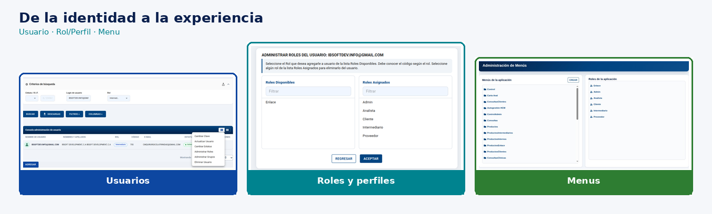
En la práctica: identidad, autorización y navegación sobre pantallas reales
Valor para el Portal: control centralizado de acceso y seguridad funcional,
experiencia diferenciada por tipo de usuario, y evolución de menús por configuración —
alineado con el modelo de Formas Configurables y con las capacidades ya disponibles
para la Fase 1 del nuevo Portal.